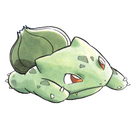

Hey there! This is the personal site of one Hannah Banana.
I started this project in the summer of 2020, hoping that a nostalgia trip would ease my quarantine boredom. Did it help? Absolutely! Did it solve my displeasure for the internet? Only a little bit.
And to be honest, I was barely sentient during the late 90s/early 2000s! I wasn't allowed to use the internet unsupervised for quite some time.
Nevertheless, I'm happy to have my own corner of the web. The me of the yesteryears would be in awe of this spaghetti code.